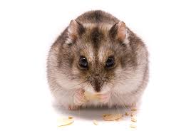

Mesocricetus (хомка[1]) — рід хом'яків, поширених на південному сході Європи й на заході Азії. Етимологія: дав.-гр. μέσος — «середній», Cricetus — «хом'як». Морфологічна характеристика Усі види менші за звичайного хом'яка (Cricetus cricetus). Це кремезні хом'яки з короткими ногами й малими лапами, відносно великими вухами й защічними мішками, а також дуже коротким хвостом. Довжина голови й тулуба 120–280 мм, хвоста 13–39 мм, вага 80–320 грамів. Самиці більші за самців. Верхні частини тіла зазвичай світло-червонувато-коричневого кольору, а нижні білі чи кремові. Усі види мають чорні відмітки принаймні з боків потилиці. У деяких екземплярів на грудях чітко виражена поперечна смуга попелястого кольору. Зубна формула: 1/1, 0/0, 0/0, 3/3 = 16.
 посилання на відео1 посилання на відео2підписуйся на мій ютуб камал буду всіх чекати
💕MADE BY: SUZANNA, ПІД ЧАС КУРСУ HTML/СSS💕